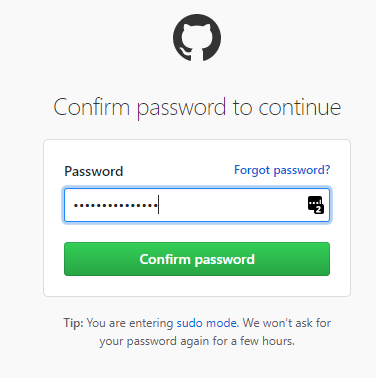
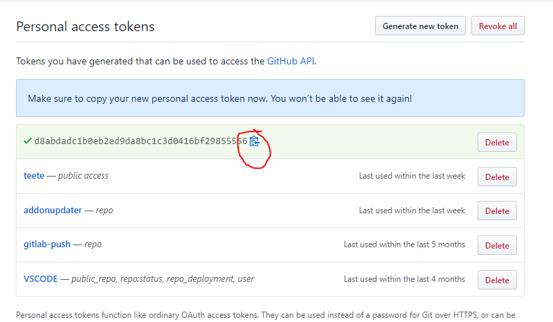

Configuration¶
NB! This needs to be in configuration.yaml, not in a "package".
HACS uses the GitHub API to gather information. Without authentication the usage of the API is limited to 60 calls per hour. The token generated below will only have read-only access to public information.
Example configuration¶
hacs:
token: d73jds8f73jkr9d8sufv2br8sd9fy92nr9f80u23r97fhse
| key | optional | default | description |
|---|---|---|---|
token |
False | A Github Personal Access Token | |
appdaemon |
True | False |
Enable tracking of AppDaemon apps. |
python_script |
True | False |
Enable tracking of python scripts. |
theme |
True | False |
Enable tracking of themes. |
After adding it to the configuration you need to restart Home Assistant.
Github Personal Access Token¶
You need to generate an Access Token to your account before you start using this.
Step 1 - Open browser¶
You are probably looking at this in a browser, so we can probably check this off.
Step 2 - Go to your GitHub "Developer settings"¶
And then "Personal access tokens." or click here: https://github.com/settings/tokens
Step 3 - Start generation¶
Click the "Generate new token" button.
If you are asked to login, do so.

Step 4 - Choices¶
First give it a logical name so that you can recognize it.
Then click the "Generate token" button at the bottom.
You do not need to check any of the boxes.

Step 5 - Copy¶
Now you see the generated token, this will be the only time you see it, make sure that you copy it manually or by clicking the clipboard icon.
